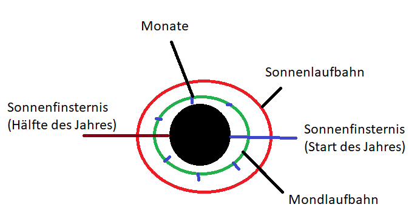

Zeitrechnung
Die Zeitrechnung Suruthuas wird von allen Rassen gleichermaßen genutzt. Den Beginn der Zeitrechnung stellt die Erfindung des Kalenders dar.
Aufbau
Ein Jahr, auch Ablauf, beschreibt die Dauer, die der Mond benötigt um die Scheibe einmal zu umrunden.
Am letzten Tag eines Jahres stehen der Mond und die Sonne in einer parallelen Ausrichtung zur Scheibe, so endet jedes Jahr mit einer Sonnenfinsternis.
In der Mitte des Jahres kommt es zu einem ähnlichen Phänomen, jedoch liegen beide Himmelskörper hier nicht genau in einer Linie, weshalb eine partielle Sonnenfinsternis entsteht.
Der Zeitraum eines Ablaufs wird in sieben gleichlange Monate, auch Mondläufe unterteilt. Ein Mondlauf umfasst 23 Tage.
Ein Tag, auch Umlauf, bezeichnet die Dauer einer Rotation der Sonne um die Scheibe. Ein Ablauf besteht somit aus 161 Umläufen.

Relation zu Erdenjahren
Abläufe, also Suruthua-Jahre, stehen im Verhältnis 1:2,3 zur Erdenjahren. Ein Ablauf entspricht demnach zwei Jahren und vier Monaten.
Kalender
Der heute suruthuaweit benutzte Kalender wurde von den Drasken entwickelt. Durch ihre Ausbreitung verbreitete sich auch der Kalender und die anderen Rassen begrüßten eine einheitliche Zeitrechnung für die intervölkische Kommunikation. Den Beginn des Kalenders und den Ablauf 0 stellt die Einführung des selbigen dar. Die Geschichte Suruthuas teilt der Kalender in verschiedene Äras ein:
| Liste der Äras | ||
|---|---|---|
| Name | Dauer | Beschreibung |
| Zeitalter der Elben (Dunkle Ära) |
1350 Abläufe | Beginn: Versklavung der Menschen. Ende: Ende der Elbenkriege. |